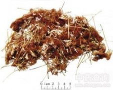

合欢花

拼音
Hé Huān Huā
别名
夜合花（《本草衍义》），乌绒（《雷公炮制药性解》）。
来源
本品为豆科植物合欢Albizia julibrissin Durazz. 的干燥花序。夏季花开放时择晴天采收，及时晒干。
生境分布
药材产浙江、安徽、江苏、四川等地。
药材特点
形态详"合欢皮"条
性状
本品为头状花序，皱缩成团。花细长而弯曲，长0.7～1cm，淡黄棕色至淡黄褐色，具短梗。花萼筒状，先端有5小齿；花冠筒长约为萼筒的2倍，先端5裂，裂片披针形；雄蕊多数，花丝细长，黄棕色至黄褐色，下部合生，上部分离，伸出花冠筒外。气微香，味淡。
性味
甘，平。
功能主治
解郁安神。用于心神不安，忧郁失眠。
用法用量
4.5～9g。
化学成分
花中鉴定了25种芳香成分，主要芳香成分为反-芳樟醇氧化物(linalooloxide)，芳樟醇(linalool)，异戊醇(isopentanol)，a-罗勒烯(a-ocimene)和2，2，4-三甲基恶丁烷(2，2，4-trimethylixetane)等。此外，还含矢车菊素-3-葡萄糖甙(cyanidin-3-glucoside)。
药理作用
1：抑制作用 实验研究表明：合欢花煎剂灌服，能明显减少小鼠的自发活动及被动活动，明显协同巴比妥类药物的中枢抑制作用，延长戊巴比妥钠、苯巴比妥钠所致小鼠麻醉时间，促使阈下剂量的戊巴比妥钠、异戊巴比妥钠引起小鼠麻醉，一次给药或连续给药3d均有显着效果
2：合欢花煎剂给家兔灌服未见脑电有明显改变：也无抗戊四氮所致小鼠惊厥作用
摘录
《中国药典》